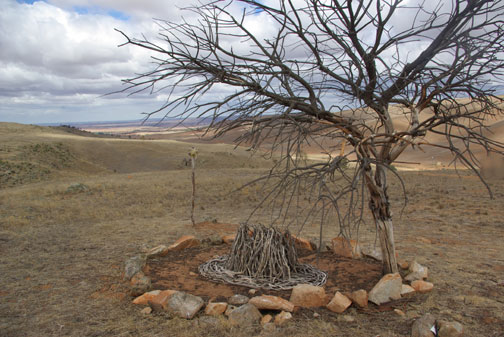

Ian Hamilton Biography
Ian Hamilton: A Life in Art
1
The first artwork I remember doing was
a watercolour of a green field dotted with white flowers (daisies
as in those little white flowers we made daisy chains out of).
That was in prep 1 at Wooloowin State School and it was exhibited
proudly in class. That painting, long disappeared, still evokes
in me the sense of wonder I felt at the time. I can still see
those little white flowers dotted across the green, can almost
smell the grass! No artwork since has affected me as much.
Through the early years I drew people and planes and boats and
trains but the drawing my mother would often comment upon was
of the family cat. Apparently that was special. Later in primary
school I immersed myself in a subject called 'Geometric and Perspective
Drawing', learning about vanishing points and other technical
terms. One drawing I particularly recall was of a caravan done
in the Geometric style, which meant angles of 45 degrees and
weird perspectives. Like the flower-dotted field that drawing
has long disappeared. One of the only remaining drawings from
this time is of a fish leaping to catch a frog done on the inside
cover of the 'Eagle Book of Trains', which I still have. I'm
not sure about the fish or the frog but I retain an interest
in railways.
At Kedron High School I did a drawing of futuristic cars on a
black background that was exhibited along with pretty landscapes.
It was pretty good and everyone thought I'd end up working for
General Motors as a designer.
As a teenager I studied art part time, including a brief period
with a life drawing class led by the legendary Mervyn Moriarty
(who later formed the Queensland Flying Art School). For my first
lesson I took along a small sketchbook. and pencil and was embarrassed
to find everyone drawing with blocks of charcoal on huge bits
of paper. That was my first real lesson. I also studied briefly
under Roy Churcher at the same campus where I was studying for
my electrical apprenticeship and (part-time) electrical engineering
(I would run into Roy sixteen years later when I went back to
Brisbane as artist in residence at Griffith University and again
in 1999 when Betty Churcher came to Mildura to do a TV program
on the Mildura Art Centre's Degas pastel).
When I was eighteen I went to Mt Isa to complete my apprenticeship
and continue part-time Engineering studies. I found myself at
one stage being taught art by a mad Balt who later topped himself
(Mt Isa seemed full of mad people). He tried to teach a European
version of landscape that I rejected. In Mt Isa there were few
Autumnal leaves and even fewer snow-covered mountains. There
were, however, opportunities to discover a landscape of despair.
On one occasion I was returning a friend's old Bedford truck,
from a dam site just beyond the Northern Territory border, and
took a wrong turn. I ended up with very little fuel, at an abandoned
outstation. When I switched off the engine and got out I felt
an immense silence. I hadn't felt anything like that before.
What I saw was a deserted shed and a dry dam ringed with dead
cattle. That was frightening. Many years later I would visit
another dry dam site north of Mildura that would become a favourite
spot for drawing and which would inform my later drawings along
the dry eastern escarpment of the Adelaide Hills.
In the summer of 1961 I returned to Brisbane
for a holiday, to find my father dying of cancer. I was with
him when he died. I didn't go back to Mt Isa but finished my
apprenticeship in Brisbane. I went wild after that. I joined
the Alexandra Headlands Surf Lifesaving Club. For the next few
years I would winter in Sydney and return to Brisbane each summer
for the surfing season. In 1967 I spent time as an Electrical
Engineer, on a Swedish merchantman, travelling the Pacific Rim.
It was in San Francisco that I purchased my first Bob Dylan album.
Dylan was for me a visual artist; his compositions as much movies,
or enigmatic paintings, as songs.
When the ship returned to Brisbane I left
and returned to my old workplace at the Evans Deakin shipyards
at Kangaroo Point. It was there that I met Ted, a communist union
official who would have a profound impact on me. He introduced
me to the Foco Club, a left-wing organization that ran Sunday
night events at the old Trades Hall. He also introduced me to
John Dos Passos and his trilogy USA; a book that left
a huge impression.
In mid 1968 I met Jennifer Walker, a young teacher from Adelaide.
Before a year was out I moved to Adelaide and we married in 1969.
It was while studying art, part time at the South Australian
School of Art, that my lecturer, Virginia Jay, convinced me to
apply for full-time entry, which I did.
I did well at art school but something happened at the end of
third year that was to change my direction. During the Christmas
break between third and fourth year I was working in a factory
repairing fluorescent light fittings. One lunch hour I left one
of the repaired fittings turned on in the corner of the workshop,
turned the main lights out and left to buy some food. When I
returned I couldn't help but notice the fitting glowing in the
corner. I liked what I saw. It was at that moment I decided that,
on returning to art school for fourth year, I would use the fluoro
tube as a painting medium.
This would lead to work that some saw as being influenced by
Dan Flavin, but which in reality had much more to do with my
own background (including the perspective drawings all those
years ago) and with colourfield artists like Barnett Newman.
Where Newman used paint strips to define spaces between colour
fields I would use fluoros, arranging them on grounds such as
fabricated boards and carpet underfelt. This led to a series
of new works that would be displayed in the art school (Art
School??) gallery and outside the school.
Perspective Grid' from the Light, Colour Space exhibition, SA
School of Art gallery, 1974.
 LIght, Colour Space exhibition, Contemporary Art Society gallery,
1974.
LIght, Colour Space exhibition, Contemporary Art Society gallery,
1974.
As a result of the exhibition I was offered
a show at a well-known North Adelaide commercial gallery. However
Art School policy forbade students showing at commercial galleries.
Disappointed, I sought other venues. Late in the year I was given
permission by the Australian Wool Commission to hold an exhibition
in one of their old woolsheds at Port Adelaide. The exhibition
'Light - Space - Colour' pitted fluoro installations against
the light coming through cracks and openings in the building's
cladding, doors and windows.
The Adelaide Advertiser critic Ivor Francis wrote:
It is unethical and unwise for a critic to single out for
special comment the work of a student attending art school.
Ian Hamilton is an exception. He has received official approval
for an exhibition and an investigation of public reaction to
it as part of his final year diploma course at the SA School
of Art.
His medium is the fluorescent tube by means of which he explores
space and colour and, by combining it with other objects, such
as string and hessian, sees if they can all be made to fit together
into a particular environment.
This aim differs from Dan Flavin's systematic corner installations
in the "Some Recent American Art" exhibition at the
Art Gallery of SA.
With a grand imaginative gesture of Michelangelonic proportions,
Hamilton has used a vast, empty woolshed (No. 32) which is at
Bedford Street, Gilman, and belongs to the Australian Wool Commission.
It is a building pregnant with spine-chilling, surrealistic possibilities
such as would have delighted the 18th century painter Giovanni
Piranessi in his search for the macabre among the dungeons of
ancient Rome.
In this atmosphere of suspense and emptiness, among a forest
of timber pillars streaking high up into the hovering gloom,
Hamilton strung a vertical, blood-red fluorescent tube. As he
looked back from the far-distant end of the shed, the tube peeped
at him balefully, disappearing and reappearing eerily from behind
one or other of the posts as he moved.
Using this as a starting point, he strategically added other
tubes of different colours which, together with string wound
around the pillars and bits of dangling hessian has produced
the uncanny effect of turning the perspective topsy-turvy.
The result is a hard-to-describe but exciting total environmental
kinetic experience for anyone able to enter into the spirit of
it.
However, if you view it only for the purpose of arguing whether
it is art or not, you may just as well expect recompense for
the bodily harm you may receive while precariously scrambling
up tooth and nail into the woolshed to see it.
Others must have taken note because, prior
to graduating I was advised that I'd won an Australia Council
'Living Artist' fellowship for 1975. This allowed me to continue
work on light and space.
My next exhibition was at the Experimental
Art Foundation. Adelaide Advertiser art critic Nigel Murray-Harvey
wrote of the exhibition:
Ian Hamilton's work with wool, fluoro tubes and skylights,
at the Experimental Art Foundation is immensely refreshing.
Two groups of fluoros, half hidden in greasy wool, seem at first
to be pools of bright sunlight admitted by the two small skylights
high in the bare corrugated asbestos roof of the partitioned-off
corner of the former jam factory.
It feels good to be there and the lack of motes floating in the
shafts of light, which 'should' be there, makes much of the space
between the skylights and their pools of light.
Of the same exhibition Stephanie Britton wrote:
With sheep sheering never too far away in Adelaide these days,
art lovers are able to join the fun, though in a somewhat different
fashion.
Ian Hamilton, young local artist whose work with fluorescent
light began while a student at the SA School of Art has produced
an environmental piece at the Experimental Art Foundation, using
wool and light.
Basically it is about a simple optical illusion and although
it works beautifully, to describe it in detail would remove the
element of surprise for those who have not yet seen the show.
One can say however, that he uses the roof structure of the Jam
Factory with its skylights, some fluoro tubes and a large quantity
of fleece.
It is a work of great charm, sensuous with all that lanolin-smelling
wool underfoot against the stark white walls and iron roof.
Like a Magritte painting it relies on an innocent appearance
and a sudden double-take, though Hamilton's revelation is a purely
physical one to do mainly with a natural phenomenon albeit reinforced
by art.
The fact that the Jam Factory happens to have skylights nine
metres off the floor is one of the unforseen bonuses of that
eccentric building.
Stephanie Britton also wrote, in the publication 'A Decade at
the EAF':
The conjunction of the new upstairs EAF gallery space and an
artist with an interest in the modification of space with light
led to perhaps the most successful use to which the gallery as
a sculptural space was ever put.
He filled the floor with piles of lanolin-smelling fleece and
below the 9 metre high factory sawtooth roof skylight he embedded
a 'daylight' fluoro. Since the tube (tubes) appeared to have
the same dimension as the skylight the illusion was complete.
The effect on a dull day of the bright patch of light on the
floor was strangely powerful.
In 1976 I was appointed Artist-in-residency
at Griffith University in Brisbane for twelve months. Here I
continued work on light, mounting installations at the university
and at the Institute of Modern Art, in the city.
Of one exhibition at the IMA, Sunday Mail critic Betty Churcher
wrote:
At the Institute of Modern Art, two situation pieces provide
a new experience for Brisbane. Both have been shown before in
Adelaide, but I'm sure not more successfully than they are now
in the simple white cubic space of the Institute.
In the upstairs gallery, Ian Hamilton creates a more evocative
and visual situation out of the double doors of the warehouse,
some fluoro strip-lighting and a floor covered in raw wool. The
access doors are just parted to allow a thin strip of sunlight
which is simulated by the fluoro strip under the wool floor cover
- a truly trompe-l'il effect which continues to confuse the observer
long after the real sun has set.
However, my most interesting work was being
done (un-reviewed) at the University. Taking the concepts used
in the woolstores show in Adelaide a step further, I installed
a series of fluoro light works in the forest surrounding the
university campus. Most successful of these was the fluoro cube.
Strung from high branches of the tall gum trees this fragile
work would rise and fall up to three metres as the supporting
trees moved in the wind. However, the university safety officials
didn't take kindly to bare fluoro tubes strung on and around
trees so the work was banned. The filmmaker David Perry (also
artist in residence at the University) filmed the dismantling
of the cube. Other art pieces included long strips of coloured
fluoro tubes up the trunks of trees. At night these produced
a spooky effect that drew the viewer deep into the forest. Other
works produced at the university included experiments with perspective
using string, laser beams and fluoro tubes. The best of these
did indeed alter the viewer's spatial perception.
But I was ready to move on from fluoro
work. While at Griffith University I'd developed an interest
in ritual through the anthropological work of Victor Turner (who
I had studied at art school) and a fascination with entropy and
paranoia, partly through reading Thomas Pynchon's Gravity's Rainbow.
Perhaps looking for a way out of the fluoro tube work I presented
a piece at the then Art Gallery of Queensland, to a group of
mainly gallery 'friends'. Before a seated audience, and supported
by slide and video projections portraying the action one second
ahead of my real time performance, I placed a flouro tube on
the floor, wired it and turned it on. All this was done very
slowly. When the tube was lit I left the stage and returned with
a rock. This I held over the tube for some seconds then dropped
it. This caused a huge explosion, giving some in the audience
a huge shock. Having done this I pointed to the floor where the
rock sat among the debris of broken tube (both ends strangely
intact) and left the stage.
This performance signalled the end of my involvement with fluoro
tubes as a primary art medium.
During that same period I went to Lamington Plateau where I saw
bowers of the Satin Bowerbird (Ptilinorhynchus violaceus). I
was taken by the complexity of the male bird's display and behaviour.
I saw, in the construction and presentation of the bower, elements
of both design and ritual, and a strong sense of colour. While
filming one male bird building his bower I observed the bird
stepping back from the bower, critically examining what it had
just done, then racing back in to change it. This seemed a calculated
action and not unlike the way artists work. I also observed so-called
'playgrounds' of Tooth- billed Bowerbirds (Scenopoeetes dentirostris).
While not as elaborate as the structures of Satin Bowerbirds
these settings, made from overturned rainforest leaves, made
for a kind of stage, upon which the male bird performed.
Back in the University studio I assembled my own 'playground'.
It consisted of a circular mound of leaf litter about two metres
across and 20 cm deep, above which was suspended a yellow fluorescent
tube (yes, the tube had reappeared). Around the walls I placed
photocopy assemblages of images of various recent artworks and
quotes from recent readings on art, entropy, paranoia and light.
Two lasers directed beams across the stage so that when I sat
on the stage (dressed in black and wearing a papier-mâché
bird's head) two pin points of red light appeared; one on my
stomach and one on my back.
Because the lasers were hidden it appeared as if the beam was
going through me.
Insert image of playground
Thus began an obsession that would continue
for many years and that would re-emerge in later years.
In 1977 I returned to Adelaide and began
working as a senior project officer for a commonwealth employment
scheme. In 1978 I received a grant from the South Australian
Government to 'Study the Art of the Golden Bowerbird'. This allowed
me to travel to the Mt Spec area northwest of Townsville where,
over several weeks camped within the forest, accompanied by the
sounds and creatures of the forest (including leeches), I observed
the workings of the male Golden Bowerbird.(Prionodura newtoniana)
Drawings from field notes
Intrigued by the complexity of Golden Bowerbird
display (the male bird sang, mimicked, danced, built and decorated
complex structures) I began to develop a theory about time and
creativity I would later call; Time Allows the Elaboration
of Basic Urges and/or Forms.
The suggestion was that an organism free from the pressures of
predation, hunger, parental duties and territorial disputation
had time to elaborate on basic urges (nest-building) and forms
(the form of the nest).
In mid 1978 I was invited to participate in Act 1 in Canberra
(an event organised by the Canberra School of Art). My piece,
exhibited it in a Canberra park, drew on work I'd done at Griffith
University and the Institute of Modern Art in Brisbane during
1976. It consisted of a circular 'stage' of leaf litter surrounded
by rocks. Above this stage was a yellow fluoro tube hung vertically.
Two lasers directed beams across the stage. Wearing black clothes
and a papier-mâché bird's head I sat on the stage
while my friend and fellow exhibitor Bob Ramsay circled the setting
reciting a prepared text about time and creativity.
Insert image of Canberra work
Later that same year the Institute of Modern
Art accepted a proposal by Bob Ramsay and me to exhibit a performance
piece titled The Brisbane Line; A Ritual Trance Walk. The exhibition
documented a walk we had completed; a walk that led us from an
Aboriginal bora ground (an initiation ritual site) in the foothills
west of the city to a midden on Stradbroke Island. The route
of the walk took us through the ruins of the Holy Name
Cathedral in the city. In passing between two sites of pre-European
culture we would enter the ruins of Brisbane's pre-global (Anglo-Irish)
culture. Documented records of the walk, along with various objects
collected along the way, were displayed in the Institute of
Modern Art.
I retraced that same route two more times; once with my friend
Leo Davis in the Summer of 1979 and again (alone) in the summer
of 1980. The experience would lead to the completion of two novels:
Meanjin Crossing and A Long Walk Through a Short History.
In 1983 the Experimental Art Foundation published The Ceremony
of the Golden Bowerbird: Playground for Paranoids; essentially
a script for performance based
on my experiences in the rainforest and which brought together
several trains of thought, including ruminations on creativity,
science and art.
 The
Ceremony of the Golden Bowerbird
The
Ceremony of the Golden Bowerbird
From 1983 to 1995 I was employed by the
City of Prospect, first as the Community Arts Officer, then as
Community Development manager. The highlight of these years was
the opening of the Prospect Art Gallery in 1988, the first purpose-built
local government art
gallery in metropolitan Adelaide. As Community Development manager
I was the driving force behind its design and completion.
In mid 1995 I left Prospect Council to undertake research for
a book about country mayors. With an advance from publishers
Wakefield Press, I set out on a journey around Australia, interviewing
the mayors of country towns across Australia. Heart of the
Country was published 1996.
 Heart
of the Country
Heart
of the Country
The 'Western Herald' from Burke stated:
Bourke's Mayor Wal Mitchell is one of 17 rural leaders featured
in
the book "Heart of the Country", the result of author
Ian Hamilton's
exploring what drives leaders of remote communities.
Ian Hamilton is a city dweller and as he watched coastal cities
grow
while inland towns declined, he wondered what went on west of
the
Great Divide, what sustained this country and who was in control
of
its destiny.
So he set out to discover what sort of people took the task of
guiding these areas, making decisions about their future.
As a result, Ian spoke to Mayors, Shire Presidents, Shire
Chairpersons and Wardens, asking what drove them to keep their
remote
corners of Australia alive.
Ian put the stories of 17 rural leaders together, these being
Wal
Mitchell of Bourke, greg Jones of Moree, Ross Miller of Toowoomba,
Barry Braithwaite of Roma, Les Tyrell of Thuringowa, Ron McCullough
of Mount Isa, Jim Forscutt of Katherine, Alan Eggleston of Port
Hedland, Ron Yuryevich of Kalgoorlie-Boulder, Malcolm Puckridge
of
Ceduna, Eric Malliotis of Coober Pedy, Keith Wilson of Whyalla,
Joy
Balluch of Port Augusta, Eric Sambell of the District of
Peterborough, Ruth Whittle of the town of Peterborough, Eddie
Warhurst of Mildura and Murray Waller of the West Coast of Tasmania.
After speaking to these people, Ian concluded that while they
were
different, there was among them a common belief in the ability
of the
individual or the small community to overcome adversity.
These stories, including Wal's, can be read, enjoyed and learned
from
Ian's book "Heart of the Country".
In March 1996 I was appointed Arts
Manager to the City of Mildura. One of the first things I was
asked on arrival in Mildura was, 'when are you going to reintroduce
the triennials?' This was a reference to the highly successful
Mildura Sculpture Triennials. I didn't think
that was a good idea. The Mildura Sculpture Triennials were of
a period, their place in art history was secure and inviolate.
Instead I proposed a contemporary version, one that took into
account recent thinking on matters such as ecology and the state
of the Murray Darling river system and which allowed a wider
spectrum of media. While mulling over what might replace the
Triennials I happened to read a poem by Jennifer Hamilton titled
View From a Plane. It read, in part:
The land lies beneath,
a palimpsest etched
erased and re-etched
by wind and sun and time.
Symbols in ancient script,
knoll and ridge, rock and
scrawl of creek bed speak
of time and space beyond ours.
Twisted and cramped, they
are surrounded by
lacunae, drifts of sand.
A page of Tamil,
mysterious dots, curls and spaces,
signifiers, but..
to us, unreadable.
But it is our land.
So owning it, we carve it.
We slice the ancient
parchment into squares,
triangles, parallelograms,
the straight line rampant.
We push the scattered runes
back into sand and time.
Ploughing and planting
turns the old faded brown
Into sharper greens and yellows.
And then the parchment
Itself disappears
Beneath the patterned crust
Of the city.
The word palimpsest stood out me. It seemed
to summarise my own thoughts about landscape. Indeed, Mildura
was a palimpsest, with its evidence of Aboriginal occupation,
buried irrigation channels and dryland farms changed to irrigated
vineyards. So, in 1998, began Mildura Palimpsest, a highly successful
arts biennial that is still going strong, thanks to the support
of many people. The fourth Palimpsest event in March 2000 coinciding
with the second Regional Galleries Summit hosted by the Mildura
Arts centre. Over one hundred artists from Australia and overseas
participated in this event.
http://www.mwaf.com.au/old_sites/palimpsest/index.html
But perhaps the greatest highlight of the Mildura years for me
was the SunRISE 21 Artists in Industry Project, which
I initiated in 1998. With funding from several sources we were
able to employ a curator (Helen Vivian) and five artists to work
with five industry groups to produce five works of art reflecting
the work of the host industry. This proved to be a In an odd
way what I had seen at the site of the abandoned bower was similar
to what I'd witnessed at the abandoned bora ring and the ruins
of the Holy Name Cathedral
all those years ago while undertaking the Brisbane Line project.
My interest in making serious art was renewed.
I left Mildura in late 200 and returned to Adelaide to begin
a new phase in art making.
Someone once said that 'artists can emerge at any time'. Back
in Adelaide I felt that I was re-emerging as an artist. I began
a series of forays to the escarpment of the Adelaide Hills with
Ken Orchard, making pen and ink drawings of the landscape. Some
of these I
converted to computer drawings using the Microsoft Word 'draw'
facility. These 'computer drawings' were shown at the Station
Masters Gallery at Strathalbyn in June 2002.
The following is an extract from Adelaide
Hills Weekender, July 2002
An exhibition inspired by the landscape near Strathalbyn is
on
display at the Strathalbyn Railway Station during July.
The display comprises the works of Ian Hamilton and Ken Orchard
and
are the outcome of numerous field trips.
Ian Hamilton ........reworked his images. Instead of using natural
materials he decided to transform his images using the computer.
He
took his field sketches and using a mouse and a simple drawing
program he redrew the sketches. The images are quirky but catch
the
feel of the countryside in a unique and deceptively simple way.....
and a simple drawing
program he redrew the sketches. The images are quirky but catch
the
feel of the countryside in a unique and deceptively simple way.....
 'Sturt Highway', 2003. 40 X 100
cm. Roadside weeds and dirt on mdf board.
'Sturt Highway', 2003. 40 X 100
cm. Roadside weeds and dirt on mdf board.
In 2003 I began a series of large works
on steel sheets. Laying the sheets flat I applied water, various
acids and urine to create patterns inspired by views of the land
from aeroplanes. Some of these works were shown in the exhibition
'Intimate Topographies' at the Hahndorf Academy (with Ken Orchard,
Pamela Kouwenhoven and Ed
Douglas) in June 2004.
Scan page from journal
But more and more I was drawn back to Bowerbird.
I re-examined my work from the late 1970s and early 1980s and
began constructing studio bowers from sticks found in and around
my home in Adelaide. In 2005 I held a solo show at the Mildura
Arts Centre titled Out of the Forest: Bowerbirds and the Art
of Ian Hamilton. The exhibition included studio sculptures,
large giclee prints, drawings, paintings and field journals.
It was for me the most successful exhibition I'd mounted since
the Woolstores exhibition of 1974.
Image from show
Steve Naylor review
Leo Davis catalogue essay
In late 2008 I went back to the cloud forests
of North Queensland with Leo Davis. We camped at the Paluma Dam.
In the nearby forest, not far from an actual bower of the Golden
Bowerbird, I built my own forest bower. 'No one will ever see
it', Leo said. 'I don't care,' I replied. But I did continue
to make works based on the bower bird for public display (entirely
ephemera as it turned out). These included several installations
at the Palmer Sculpture Biennial and the Heysen Sculpture Biennial.
The last of these was a giant 'maquette' at The Cedars, part
of the Bower Tower Project with John Hayward.
Insert image from The Cedars
In addition to these bower works I have,
over a period of several years, installed several
'memorials' to the bowerbird. One is near Euston in souther New
South Wales, one near Hungerford in SW Queensland, and another
at Mt Spec in far north Queensland.
 Avenue Bower # 1 120 x 900 x 60 cm Eucalyptus Sticks 2005
Avenue Bower # 1 120 x 900 x 60 cm Eucalyptus Sticks 2005

Bower 1 Palmer Sculpture Biennial 2008
It's been a long journey since that small painting of flowers
in a field of green from primary school, and I'm still at it!
Must be mad! None of it has ever turned a profit!
As of March 2015 I am working towards completing
two projects with my 'Bower Tower' partner John Hayward. One
is a large (12 metre high X 12 metre long) work for the new Royal
Adelaide Hospital due for installation in July 2015; the other
an exhibition at the Prospect Gallery in November 2015. I will
include more details regarding these later.
Less demanding, but more enjoyable, is the Long Paddock venture.
Every Thursday I set out with Bill Morrow and Stephan Leishman
(occasionally Ian North) into the wilds of the Adelaide Hills
to draw and paint.
Mount Barker, Long paddock sketch, pen
and ink on board, 2914
Meanwhile I am attempting to finish my
second novel A Long Walk Through a Short History, a flaneur's
journey across the city of Brisbane.
To be continued .........
|